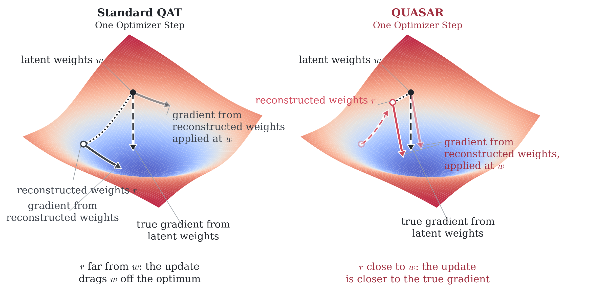

QUASAR: Lowering the Loss Floor of Quantization-Aware Training with Loss-Aware Reconstruction
QUASAR treats quantization-aware training as a weight reconstruction problem, continuously fitting a loss-aware quantized representation as the latent full-precision weights evolve. Its analysis connects weight reconstruction quality to the optimization dynamics and final quantized-model loss.